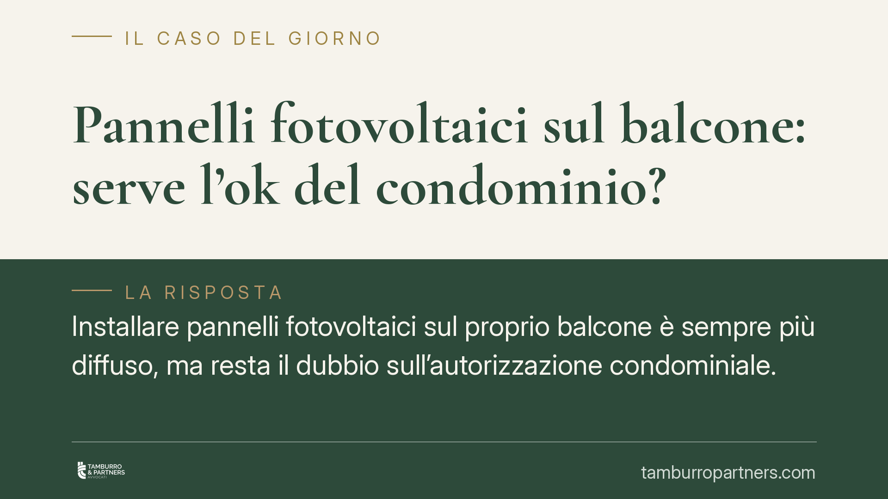

Pannelli fotovoltaici sul balcone: serve l'ok del condominio?
Installare pannelli fotovoltaici sul proprio balcone è sempre più diffuso, ma resta il dubbio sull'autorizzazione condominiale. La regola è che sul bene di proprietà esclusiva il condomino agisce in autonomia. I limiti scattano solo quando l'impianto tocca parti comuni o pregiudica decoro e sicurezza. Chiarire i confini evita contenziosi e tutela l'accesso alle detrazioni.

Il caso
Un condomino intende collocare pannelli fotovoltaici sul balcone di sua proprietà per ridurre i consumi domestici. La domanda ricorrente è se debba prima ottenere il consenso dell'assemblea. La risposta, nella maggior parte dei casi, è negativa: il balcone di proprietà esclusiva è nella piena disponibilità del titolare, che può utilizzarlo per impianti a servizio della propria unità.
I problemi nascono quando l'installazione non resta confinata al bene privato, ma coinvolge muri perimetrali, facciata, lastrico solare o altre parti comuni.
Inquadramento normativo
Il riferimento è l'art. 1122-bis del codice civile, introdotto dalla riforma del condominio (Legge n. 220/2012). La norma consente al singolo condomino di installare impianti per la produzione di energia da fonti rinnovabili destinati al servizio di singole unità, anche sul lastrico solare e su ogni altra idonea superficie comune, oltre che sulle parti di proprietà individuale.
Quando l'impianto interessa parti comuni, il condomino deve dare comunicazione all'amministratore, indicando modalità di esecuzione. L'assemblea può prescrivere adeguate modalità alternative di esecuzione o imporre cautele a salvaguardia della stabilità, della sicurezza e del decoro architettonico. Non può però vietare l'installazione in modo arbitrario.
Resta fermo l'art. 1122 cod. civ., che vieta al condomino opere sulle proprie parti che rechino danno alle parti comuni o pregiudichino stabilità, sicurezza o decoro architettonico dell'edificio. È questo il vero perimetro entro cui muoversi.
Sul versante fiscale, l'art. 16-bis del TUIR (D.P.R. n. 917/1986) riconosce la detrazione IRPEF per interventi di recupero edilizio, entro cui rientra l'installazione di impianti fotovoltaici a servizio dell'abitazione, con l'aliquota vigente al momento della spesa. Consigliamo di verificare l'aliquota effettivamente applicabile all'anno di sostenimento del costo, perché le percentuali sono soggette a periodiche revisioni.
Implicazioni pratiche
Per il condomino la distinzione operativa è netta. Se i pannelli restano interamente sul balcone di proprietà, senza ancoraggi alla facciata comune né modifiche visibili che alterino l'estetica dell'edificio, non serve alcuna delibera assembleare.
Quando invece l'installazione richiede fissaggi al muro perimetrale, passaggi di cavi su parti comuni o interventi sul parapetto condominiale, scatta l'obbligo di comunicazione preventiva all'amministratore. L'assemblea non concede un'autorizzazione in senso proprio, ma può intervenire con prescrizioni tecniche.
Il profilo del decoro architettonico è il più insidioso. Un impianto visibile dall'esterno, in un edificio di pregio o vincolato, può essere contestato dagli altri condomini. Nei contesti soggetti a vincolo paesaggistico o storico occorre inoltre valutare le autorizzazioni amministrative, che seguono regole proprie e indipendenti da quelle condominiali.
Nel supercondominio la comunicazione va indirizzata all'amministratore della struttura competente per la parte comune interessata.
Cosa fare in concreto
- Verificate la natura del bene: accertate se l'installazione resta sul balcone di proprietà esclusiva o coinvolge parti comuni, perché da questo dipende l'obbligo di comunicazione.
- Comunicate all'amministratore in via preventiva e per iscritto quando l'impianto tocca facciata, parapetto comune o lastrico, indicando modalità e tempi di esecuzione.
- Controllate il regolamento condominiale: alcuni regolamenti contrattuali contengono clausole specifiche su installazioni e decoro, che vincolano il singolo.
- Verificate i vincoli esterni: in presenza di vincoli paesaggistici, storici o di zone tutelate, richiedete le autorizzazioni amministrative prima dei lavori.
- Documentate le spese e verificate l'aliquota di detrazione vigente nell'anno di sostenimento, conservando fatture e tracciabilità dei pagamenti.
La cornice normativa tutela il diritto del condomino alla transizione energetica, ma lo bilancia con la protezione delle parti comuni. Muoversi con una comunicazione ordinata all'amministratore, quando dovuta, riduce sensibilmente il rischio di contenzioso.
---
Contributo informativo a cura di Tamburro & Partners - Avv. Giuseppe Tamburro. Non costituisce parere legale.
Ogni condominio ha una storia a sé.
Se gestisci un'amministrazione e vuoi un confronto su una specifica questione condominiale, scrivi allo studio. Ti rispondiamo entro un giorno lavorativo.